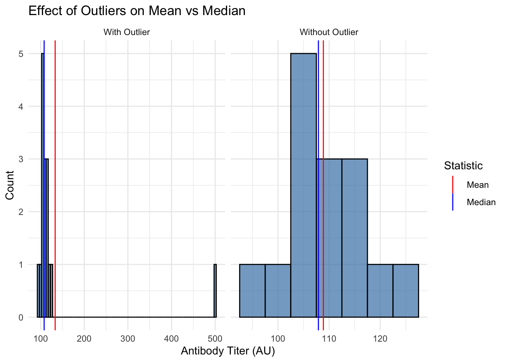
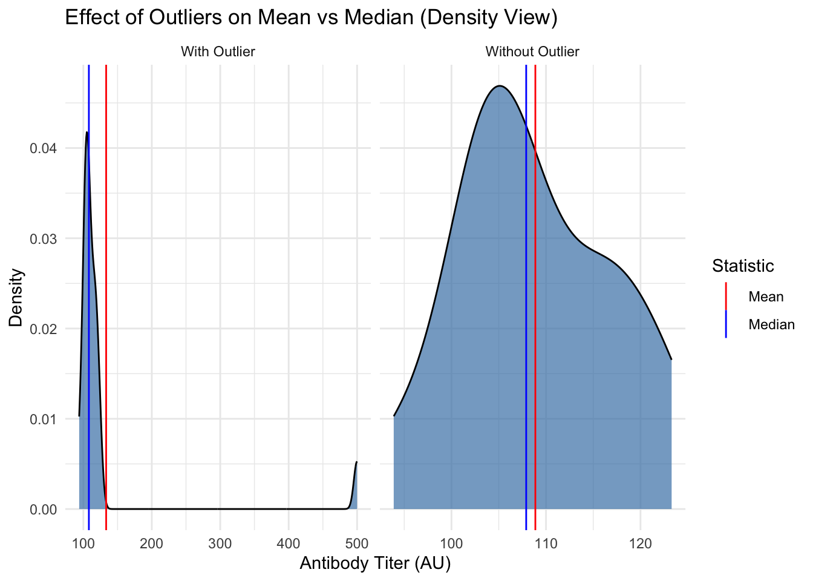
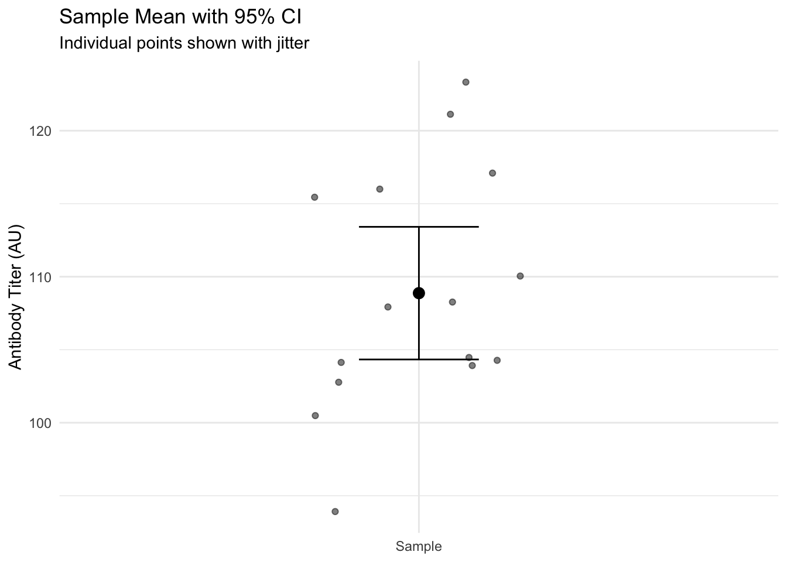

In biomedical research, we can rarely study an entire population (e.g., all patients with a disease). Instead, we work with a sample (a subset of that population). Our goal is to use that sample to make an inference about the population.
For example, in immunology, we might want to know if a vaccine increases antibody titers in the general population. We can’t test everyone, so we study a sample of subjects and use statistics to make inferences about the broader population.
Describing Your Sample
Central Tendency: Mean vs. Median
Mean: The average value (sum divided by count). It is sensitive to outliers.
Median: The middle value (50th percentile). It is robust to outliers.
Let’s see how outliers affect both measures using antibody titer data:
Code
# To better illustrate the concept, we'll use a smaller sample size (n=15)# and a more extreme outlier. This will make the effect on the mean more dramatic.# rnorm(n, mean, sd) generates n random numbers from a normal distribution.# A normal distribution is the classic "bell curve" - most values cluster around # the mean, with fewer values at the extremes. It's very common in biology.normal_titers <-rnorm(n =15, mean =105, sd =8) # Generate 15 normal antibody titersoutlier_titers <-c(normal_titers, 500) # Add one extreme outlier (500) to the dataset# Compare mean and median using a robust dplyr approachbind_rows( # Combine datasetstibble(type ="Without Outlier", titer = normal_titers), # Create dataset without outliertibble(type ="With Outlier", titer = outlier_titers) # Create dataset with outlier) |>group_by(type) |># Group by dataset typesummarise( # Calculate summary statisticsMean =mean(titer), # Calculate mean for each groupMedian =median(titer), # Calculate median for each group.groups ="drop"# Remove grouping ) |> knitr::kable(digits =1) # Create formatted table with 1 decimal place
type
Mean
Median
With Outlier
133.3
108.1
Without Outlier
108.9
107.9
Code
# Visualize both distributions with mean and median markersplot_df <-bind_rows(tibble(titer = normal_titers, type ="Without Outlier"),tibble(titer = outlier_titers, type ="With Outlier"))means_df <- plot_df |> dplyr::group_by(type) |> dplyr::summarise(xintercept =mean(titer), .groups ="drop")medians_df <- plot_df |> dplyr::group_by(type) |> dplyr::summarise(xintercept =median(titer), .groups ="drop")ggplot(plot_df, aes(x = titer)) +geom_histogram(binwidth =5, fill ="steelblue", alpha =0.7, color ="black") +geom_vline(data = means_df, aes(xintercept = xintercept, color ="Mean")) +geom_vline(data = medians_df, aes(xintercept = xintercept, color ="Median")) +facet_wrap(~type, scales ="free_x") +scale_color_manual(name ="Statistic", values =c("Mean"="red", "Median"="blue")) +labs(title ="Effect of Outliers on Mean vs Median",x ="Antibody Titer (AU)",y ="Count") +theme_minimal()

Code
# A density plot shows a smoothed version of the distribution.ggplot(plot_df, aes(x = titer)) +geom_density(fill ="steelblue", alpha =0.7, color ="black") +geom_vline(data = means_df, aes(xintercept = xintercept, color ="Mean")) +geom_vline(data = medians_df, aes(xintercept = xintercept, color ="Median")) +facet_wrap(~type, scales ="free_x") +scale_color_manual(name ="Statistic", values =c("Mean"="red", "Median"="blue")) +labs(title ="Effect of Outliers on Mean vs Median (Density View)",x ="Antibody Titer (AU)",y ="Density") +theme_minimal()

Note
Notice how the mean is pulled toward the outlier, while the median stays stable. When your data has outliers or is skewed, the median is often a better measure of central tendency.
Variability: Standard Deviation (SD) vs. Standard Error (SE)
This is one of the most common points of confusion in statistics. They measure different things:
Standard Deviation (SD): Measures the variability of individual observations in your sample. A large SD means your data points are very spread out from the mean.
Standard Error (SE): Measures the precision of your sample mean. It tells you how much you would expect the mean to vary if you repeated your experiment with new samples.
The formula for SE makes the distinction clear: SE = SD / sqrt(n). The SE gets smaller as your sample size increases because larger samples give more precise estimates of the population mean.
Let’s calculate both for our antibody titer data:
Code
# Calculate SD and SE for both datasetsbind_rows(tibble(data ="Without Outlier", titers = normal_titers),tibble(data ="With Outlier", titers = outlier_titers)) |>group_by(data) |>summarise(n =n(),mean_titer =mean(titers),sd_titer =sd(titers),se =sd(titers) /sqrt(n()) ) |> knitr::kable(digits =1)
data
n
mean_titer
sd_titer
se
With Outlier
16
133.3
98.1
24.5
Without Outlier
15
108.9
8.2
2.1
Important
Key points about SD vs SE:
SD describes the spread in your data (variability between observations)
SE describes the precision of your mean estimate
SE = SD/√n, so it gets smaller with larger sample sizes
SD does not systematically change with sample size
Quantifying Uncertainty: The 95% Confidence Interval (CI)
A 95% confidence interval gives us a range where we can be 95% confident the true population parameter lies. For a mean, use the t critical value (≈ 1.96 for large samples):
CI = mean ± (t* × SE)
Let’s calculate and visualize this for our antibody titer data:
Code
# Calculate CI for normal titers (t-based)ci_df <-tibble(titers = normal_titers) |>summarise(n =n(),mean_titer =mean(titers),sd_titer =sd(titers),se =sd(titers) /sqrt(n()),t_crit =qt(0.975, df =n() -1),ci_low = mean_titer - t_crit * se,ci_high = mean_titer + t_crit * se )# Visualize the data, mean, and CIscatter_df <-tibble(y = normal_titers)ggplot(scatter_df, aes(x ="Sample", y = y)) +geom_jitter(width =0.2, alpha =0.5) +geom_point(data = ci_df, aes(x ="Sample", y = mean_titer), size =3, inherit.aes =FALSE) +geom_errorbar(data = ci_df,aes(x ="Sample", ymin = ci_low, ymax = ci_high),width =0.2, inherit.aes =FALSE) +labs(title ="Sample Mean with 95% CI",subtitle ="Individual points shown with jitter",x =NULL,y ="Antibody Titer (AU)") +theme_minimal()

Note
Interpretation: We are 95% confident that the true population mean antibody titer lies between 104.3 and 113.4 AU.
From Description to Inference: Why Do We Need Tests?
So far, we’ve learned to describe our sample data (mean, median, SD, SE, CI). But as researchers, we usually want to answer bigger questions:
“Does this vaccine actually work?”
“Is the difference I see just due to random chance?”
“Can I generalize from my sample to the broader population?”
This is where statistical inference comes in. We use our sample data to make educated guesses about the population, while accounting for uncertainty.
Hypothesis Testing Framework
When comparing groups (like control vs. treatment), we follow these steps:
Start with a null hypothesis (H₀) of “no effect”
Collect data
Calculate how unlikely the data would be if H₀ were true (p-value)
Make a decision based on this probability
For example, testing if a vaccine increases antibody titers:
- H₀: mean_vaccinated = mean_control
- Ha: mean_vaccinated ≠ mean_control (two-sided)
- Or Ha: mean_vaccinated > mean_control (one-sided)
Effect Sizes
While p-values tell us if a difference is statistically significant, effect sizes tell us if it’s meaningful. For comparing means, we often use Cohen’s d:
d = (mean₁ - mean₂) / SD_pooled
Code
# Function to calculate pooled standard deviationpooled_sd <-function(sd1, sd2, n1, n2) {sqrt(((n1 -1) * sd1^2+ (n2 -1) * sd2^2) / (n1 + n2 -2))}# Example: Calculate Cohen's d for our outlier comparison# (This is just for illustration - normally we wouldn't do this with an outlier!)control_mean <-mean(normal_titers)outlier_mean <-mean(outlier_titers) control_sd <-sd(normal_titers)outlier_sd <-sd(outlier_titers)# Calculate pooled SD and Cohen's dpooled_sd_val <-pooled_sd(control_sd, outlier_sd, length(normal_titers), length(outlier_titers))cohens_d <- (outlier_mean - control_mean) / pooled_sd_valcat("Cohen's d =", round(cohens_d, 2))
Cohen's d = 0.35
Effect size interpretation:
- |d| ≈ 0.2: Small effect
- |d| ≈ 0.5: Medium effect
- |d| ≈ 0.8: Large effect
When Do We Use t-tests?
t-tests are one of the most common statistical tests in biomedical research. Use them when:
Comparing means between two groups (unpaired t-test)
Comparing before/after measurements in the same subjects (paired t-test)
Your data is approximately normally distributed (which we can check)
You have continuous outcome variables (like antibody titers, cell counts, etc.)
Examples in immunology:
- Control vs. treated antibody levels
- Pre- vs. post-vaccination immune responses
- Comparing cytokine levels between patient groups
The concepts we’ve covered (means, SDs, SEs, CIs, effect sizes) are the foundation for understanding t-test results.
Key Points Summary
Descriptive Statistics
Use mean for symmetric data, median when outliers present
Report SD for data spread, SE/CI for precision of means
Remember: SE = SD/√n
Inference
95% CI gives range for population parameter
p-value measures evidence against H₀
Effect size quantifies practical significance
Best Practices
Always visualize your data
Report effect sizes with p-values
Consider biological significance
Practice Exercises
For this antibody titer dataset:
Code
practice_data <-c(normal_titers, 300) # Using our simulated data + a moderate outlier
Calculate and interpret:
a) Mean and median
b) SD and SE
c) 95% CI for the mean
Would you use the mean or median for these data? Why?
How would you explain the difference between SD and SE to a colleague?